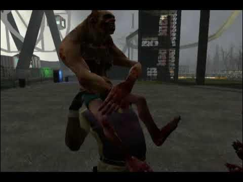
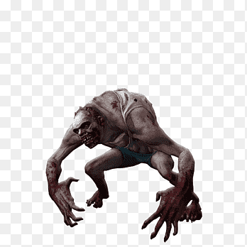

El Jockey apareció siendo un infectado especial en Left 4 Dead 2. Significando que su mutación de la gripe verde tardo en hacer efecto en los portadores de la cepa.
El Jockey no es un infectado especial discreto, este infectado especial carga con una gran cantidad de energía atacando al instante que vea a un sobreviviente. La ventaja que tiene el Jockey para compensar su hiperactividad es su baja estatura que le permite pasar desapercibido en los entornos de la ciudad o incluso durante las hordas.
Su ataque solo afectara a un sobreviviente, pero esto puede decidir el destino del grupo. Su forma de atacar es similar a la del Hunter más este no puede quedarse sobre el sobreviviente por mucho tiempo, teniendo un tiempo limite antes de caerse de él. Lo especial de este infectado es que tapa los ojos del sobreviviente y poniendo su peso encima de ellos dirigiéndolos lejos del grupo a veces llevándolo al centro de la horda.

El Jockey es un infectado de corta estatura que al momento de mutar se quedó erguido, adoptando esta forma al convertirse en un infectado especial. El Jockey parece portar unos shorts más por el cambio de apariencia que tuvo por la gripe verde es posible que se haya tratado de su ropa interior, en la parte superior ocupa una camiseta de tirantes que se ha visto desgarrada por su mutación.

Similar al Hunter, el Jockey puede ser detenido empujándolo, esto es un caso que muy pocas veces se da dado a la espontaneidad de sus ataques. Lo más común para eliminar a este infectado es esperar a que este sobre el sobreviviente y otro miembro del equipo lo debe empujar para tirarlo de encima y rematarlo en el suelo o directamente dispararle mientras esta sobre el sobreviviente.
En un inicio se creía que el Jockey pudo haber sido la mutación que un niño o infante haya sufrido por la gripe verde. Esto se descartó recordando las normas de los juegos de zombis donde se prohíbe poner personas vulnerables cómo infectados. Esto inició la teoría de que el Jockey es en realidad un anciano. Esto se atribuye a la posición que tiene y a la hiperactividad que muestran, cómo si fueran personas que después de tanto tiempo pudieran volver a recuperar aquella movilidad.